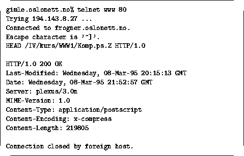

HTTP tjeneren svarer med en responskode ala SMTPs koder, og en serie headere og til slutt selve datadelen, dvs. det klienten spurte etter. Klienten bruker informasjonen den mottar gjennom headerne, og spesielt viktig er MIME headerne Content-Type, Content-Encoding og Content-Length. De to første av disse forteller klienten hva slags data som mottas og om det evt. må gjøres en konvertering først.
Se figur 3 for et eksempel på dette.
